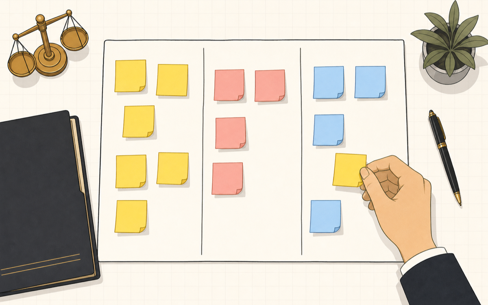
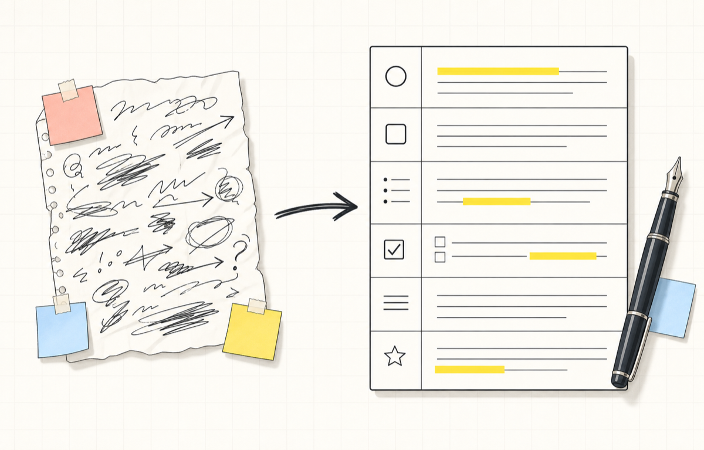
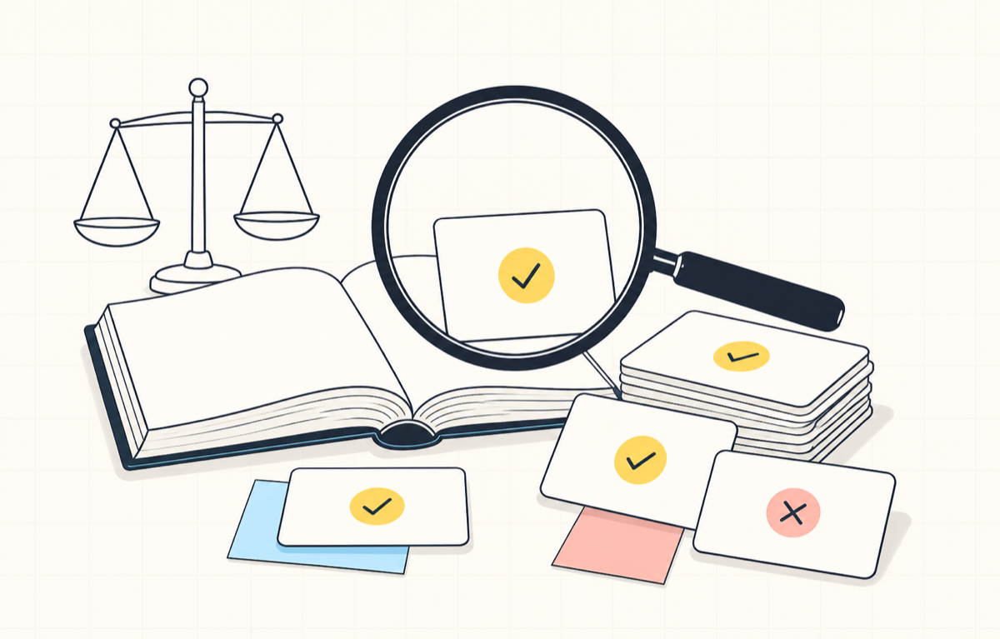
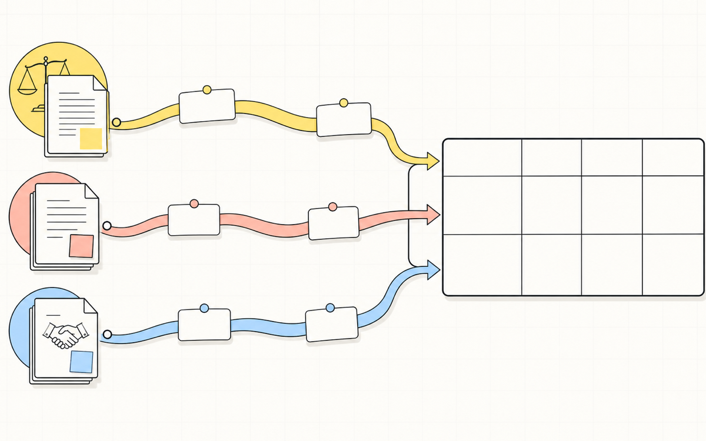
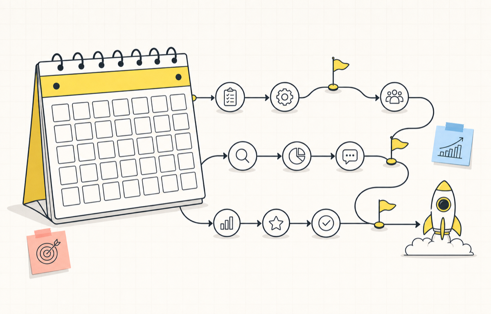

변호사 AX 나노디그리 · 7차시 실습 과정
터미널을 처음 열어 보는 변호사도,
혼자 끝까지 따라갑니다.
반복되는 법률업무를 AI에게 어디까지 맡길지 스스로 정하고, 근거를 원문으로 검증하고, 의뢰인 정보를 지키면서 30일 파일럿까지 세웁니다. 모든 명령과 프롬프트는 복사 버튼 한 번으로 옮겨 붙일 수 있습니다.
↑ 코딩은 없습니다. 한국어 문장이 전부입니다.
반복되는 법률업무를 AI에게 어디까지 맡길지 스스로 정하고, 근거를 원문으로 검증하고, 의뢰인 정보를 지키면서 30일 파일럿까지 세웁니다. 모든 명령과 프롬프트는 복사 버튼 한 번으로 옮겨 붙일 수 있습니다.
↑ 코딩은 없습니다. 한국어 문장이 전부입니다.
1차시는 준비물이 없습니다 — 웹브라우저와 AI 계정 하나면 바로 시작합니다. 2차시부터 프로그램을 설치하니, 1차시를 마친 뒤 공통 준비 (Windows)를 먼저 끝내 두면 이후가 편합니다. 각 차시는 손으로 채우는 실습지와 AI를 켜고 하는 실전 랩으로 이어집니다.

반복되는 법률업무를 무작정 자동화하지 않고, AI가 도울 수 있는 범위와 사람이 직접 판단해야 하는 지점을 구분합니다.
안티그래비티 기본 실습과 헤르메스 강사 시연, 선택한 심화 도구의 상태를 기록하며 무엇을 연동했고 어떤 권한을 어디까지 열어 주었는지 확인합니다.

한 문장 명령을 목적·자료·금지사항·형식·검토 기준·예시를 갖춘 법률업무 지시서로 바꾸고, 도구에 실행해 결과를 확인한 뒤 한 번 다듬습니다.

파이(Pi)의 자율형 법률 리서치 스킬과 korean-law-mcp로 공개 법령·판례 자료를 자동 수집·요약하고, 그 결과의 주장 하나하나를 원문과 대조해 리서치 검증표 1부를 완성합니다.

안티그래비티로 여러 문서를 한 번에 분석해 시간을 줄이면서도, 템플릿에서 발송까지 검토 흔적과 승인 관문이 남는 문서 작성 워크플로 1장을 완성합니다.
의뢰인 접점 업무 하나를 골라, 자동 초안의 범위와 입력 전 마스킹 규칙, 발송 전 승인 절차를 갖춘 안전한 소통 시나리오 1건을 완성합니다.

여섯 차시 동안 만든 결과물을 하나의 흐름으로 연결하고, 실험을 실제 업무로 옮기는 30일 AX 파일럿 계획 1부를 완성합니다.
차시 본문에서 필요할 때 링크로 안내합니다. 아래 순서대로 설치하는 것을 권합니다. 입력해야 하는 주소·명령·설정값은 모두 복사 버튼이 붙은 상자에 들어 있습니다.
교육에서 쓰는 AI 도구(파이, 안티그래비티, Codex CLI, korean-law-mcp)를 설치하기 전에 한 번만 해 두는 공통 준비입니다.
안티그래비티는 구글이 만든 에이전트 작업 환경입니다.
헤르메스는 여러 AI 에이전트에게 일을 나눠 주고 결과를 모아 한 번에 보고하는 "조율 담당" 에이전트입니다.
주관사가 운영하는 AI 모델 창구에 실습용 키로 연결합니다. 헤르메스 모델 연결과 한 세트입니다.
파이(Pi)는 터미널(검은 화면)에서 대화하듯 지시하면 내 컴퓨터의 폴더에 있는 파일을 직접 읽고 고쳐 주는 오픈소스 AI 에이전트입니다.
Codex CLI는 OpenAI가 만든 터미널(글자로 컴퓨터에 명령을 내리는 검은 창)용 AI 작업 도구입니다.
korean-law-mcp는 법제처 국가법령정보센터의 공식 데이터(법령·판례·헌재결정·조례·해석례 등 42개 API)를 AI 도구 안에서 바로 불러 쓸 수 있게 연결해 주는 MCP 서버입니다.